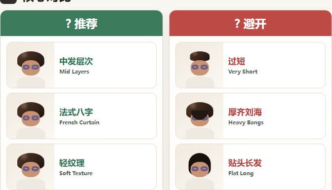
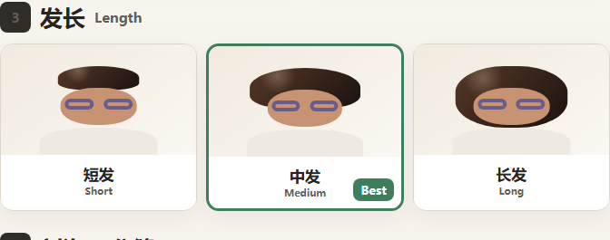
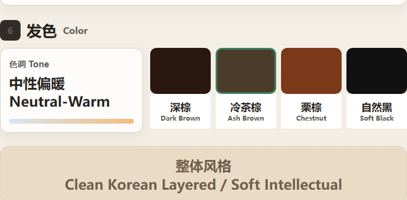
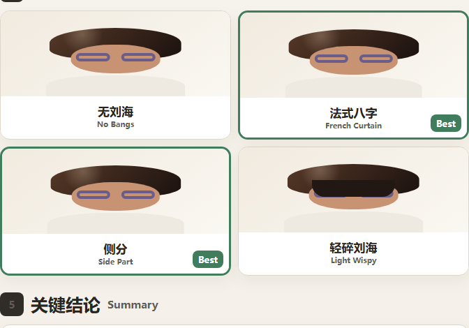

首次真实预览已完成
未保存这次有 3 个发型方向可以参考。
先看主推荐，再比较另外两个方向，判断哪一个最像你会真实尝试的样子。

多发型推荐
可判断方向
第 1 个方向
主推荐：中发层次
优先推荐与先避开
同一次结果里同时给出可尝试和不建议首选的方向。
先不建议作为首选
对照先帮自己判断一下
这两个答案会帮我们知道结果有没有真的可用。
本次推荐
中发层次，变化明显但不突兀。
为什么可以先试
- 保留你的五官重心，只把发型层次往更轻盈的方向推进。
- 中发长度比短发更稳，日常变化明显但不用一次改太大。
谨慎点
可以先避开过短长度和厚重齐刘海，容易让整体显得更闷。
查看更完整的发型分析
展开后看长度、刘海分缝和发色细节。
展开
查看更完整的发型分析
展开后看长度、刘海分缝和发色细节。




保存这张作为常用形象？
下次生成可以少传一次照片。不保存也可以继续使用，这和“保存到历史”是两个不同动作。
哪里还不太对？
前面的判断已经记录了。这里可补充具体问题。
谢谢，已经记录这次判断
你可以继续换风格，或者先保存这张结果。反馈不会打断后续探索。
Prototype states